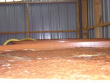
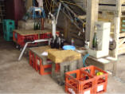

|
|
Les bouteilles sont stockées couchées pour éviter que le bouchon de liège sèche, il assure ainsi une bonne conservation du Cidre. Les bouteilles seront ensuite étiquetées en vue de la commercialisation. |
|
La Ferme de La Godinière
27410
Le Noyer en Ouche
dernière mise à jour de cette page : 22.10.2009
Notre ancienne adresse web :cidre.rene.lesur.club.fr est
devenue obsolète et est
transférée sur
http://pagesperso-orange.fr/lagodiniere27/
La Fabrication du
Cidre
à la Ferme de la
Godinière
Suite de la page précédente : La Fabrication
du Cidre
Râpage, pressurage des pommes
Soutirage
Le moût de pommes arrivé dans les cuves va subir une première fermentation : la
fermentation alcoolique.
Le sucre contenu dans le jus va se transformer en
alcool sous l'action des levures contenues naturellement dans le jus avec
dégagement de gaz carbonique et apparition de dépôt en fond de cuve. Une fois
celle-ci terminée, nous aurons donc le cidre.
Pour obtenir un bon cidre de qualité,
il est nécessaire de maîtriser au mieux la fermentation. La méthode la plus
simple est le soutirage. Il pourra être nécessaire de refroidir les jus lorsque
les températures sont élevées.
| Dès les premiers jours suivant le brassage, le moût de pomme va subir une épuration naturelle avec l'apparition d'une couche épaisse en haut de la cuve - on l'appelle le chapeau brun - qui est un agglomérat d'impuretés qui s'est formé grâce à la pectine contenue dans le jus. Le chapeau peut représenter plus de dix pour cent du volume initial de moût. Il faudra procéder à un premier soutirage pour séparer le chapeau du jus qui est alors limpide à ce stade. Ce phénomène est appelé la défécation ( cela ne s'invente pas ). |
 |
Ensuite, pourra commencer la fermentation alcoolique en cuve - fermentation principale - Elle se voudra lente et régulière, et il sera nécessaire d'effectuer d'autres soutirages. En cas de nécessité, on pourra avoir recours à la filtration. Chez nous, elle ne sera pas trop poussée pour ne pas dénaturer le produit et conserver au maximum tous ses arômes afin de garder à notre Cidre son caractère authentique qui nous rappelle vraiment le bon vrai Cidre d'autrefois. Il n'est ni relevuré, ni sulfité. (Voir Info Sulfites).
Embouteillage
|
 |
Quand la fermentation principale sera
suffisamment avancée et stabilisée, la mise en bouteilles sera effectuée. |
|
Le bouchon est en liège et est
maintenu par un muselet pour éviter qu'il ne s'échappe sous l'effet de la
pression. Lorsque l'on ôtera le bouchon, le gaz se libérera et créera une
mousse agréable. |
|
|
|
Les bouteilles sont stockées couchées pour éviter que le bouchon de liège sèche, il assure ainsi une bonne conservation du Cidre. Les bouteilles seront ensuite étiquetées en vue de la commercialisation. |
|
| ATTENTION : Comme vous
pouvez le deviner aisément, tout cela représente une certaine somme de
travail. Tout le monde en est conscient, que ce soit le consommateur,
ou le professionnel. A tel point que l'on commence à rencontrer des
producteurs de pommes à cidre, qui se lancent dans la commercialisation de
cidre, en portant leurs pommes chez un fabricant, et en reprenant les
bouteilles pour les mettre sur le marché, c'est bien plus simple comme
cela, et çà fait moins de boulot, ils mettent leur étiquette "Cidre
Artisanal" (évidemment, c'est un artisan qui est inscrit au registre des
métiers), avec leur nom comme l'impose et le permet la réglementation, et
dans le coin de l'étiquette, il y a un tout petit "emb 76xxx", qui
signifie que le produit n'est pas conditionné à la ferme. Mais le quidam de consommateur n'y voit que du feu, et assimile ce produit artisanal à un produit fermier fabriqué par la personne qui est en face de lui ... C'est TRÈS GRAVE pour nous... Consommateurs avertis qui êtes à la recherche de véritables produits fabriqués par nous, n'hésitez pas à poser des questions sur le processus de fabrication, et demandez à visiter les installations de fabrication, elles existent ou n'existent pas, et si par hasard il n'y a rien à voir, c'est qu'il y a peut-être un secret à cacher... Ouvrez l'œil... |
|
Je ne peux résister à vous faire partager cette découverte merveilleuse : De la part de Thierry qui vient de me faire découvrir une autre manière de faire du Cidre...
Bonjour, Suite à notre dernier mail d'information destiné à vous bénéficier de nos outils gratuits, vous avez été nombreux à tester et à utiliser Map Factory sur le site internet www.1001maps.fr . Nous tenions à vous en remercier car vos encouragements et vos remarques pertinentes nous permettent de faire évoluer nos outils dont vous êtes les bénéficiaires. A ce jour, plus de 60000 cartes sont affichées sur les sites internet des abonnés.
Fort de ce succès, nous venons de développer
un nouveau service de calcul d'itinéraire
100% graphique. Vous pouvez le tester ici : http://iti.1001maps.fr et l'installer
gratuitement sur votre site internet.
et là, çà nous en bouche un coin !!! Allez donc voir : Faites du Cidre !!! ...
Fallait y penser, c'est un bon plan... il n'y a pas mieux !!!
Je n'oserais pas dire que c'est honteux, car le mot est trop faible et trop gentil, mais quand je pense au travail que nous, producteurs transformateurs faisons, avec toutes les obligations réglementaires et toutes les règles de traçabilité que la sécurité alimentaire tend à nous imposer... J'arrête ici mes états d'âme pour ne pas risquer de poursuites pour diffamation ou... Et que penser des ces consommateurs qui prennent çà comme du bon pain... |
Suite : La Fabrication du Cidre à la Ferme de la Godinière
|
Retour
Les Produits
ou
Accueil ou
Plan du
site |
En Savoir plus sur :
Ecrivez nous pour donner votre impression et votre suggestion, merci.
Ma messagerie est protégée par Avast
Conception et Réalisation : René Lesur